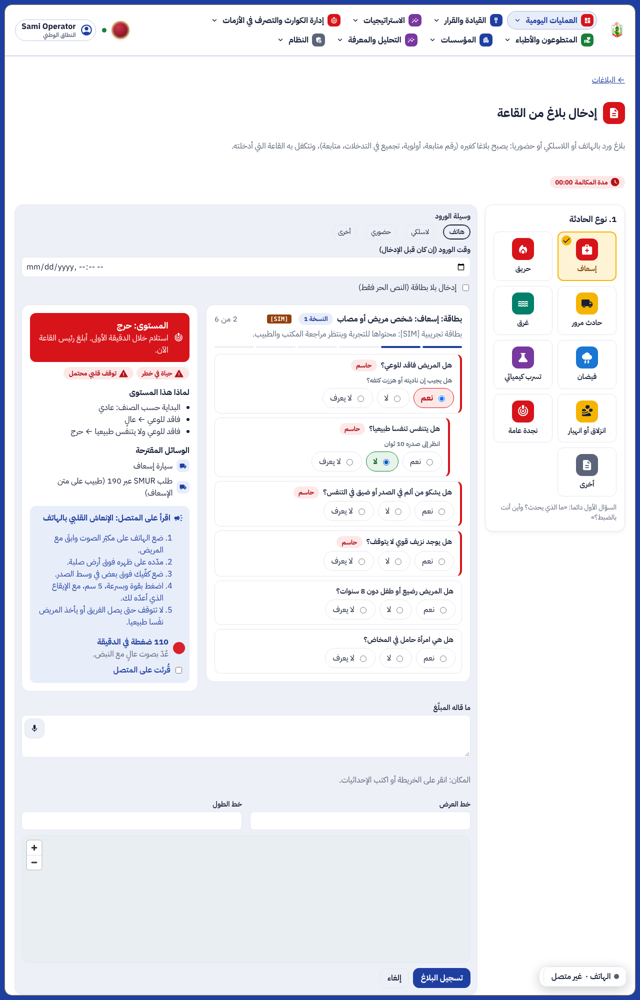
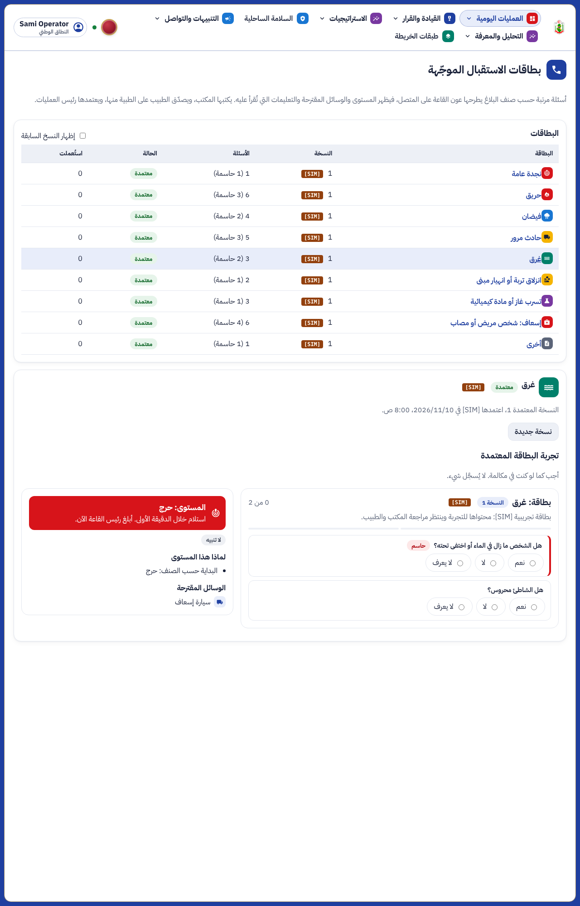
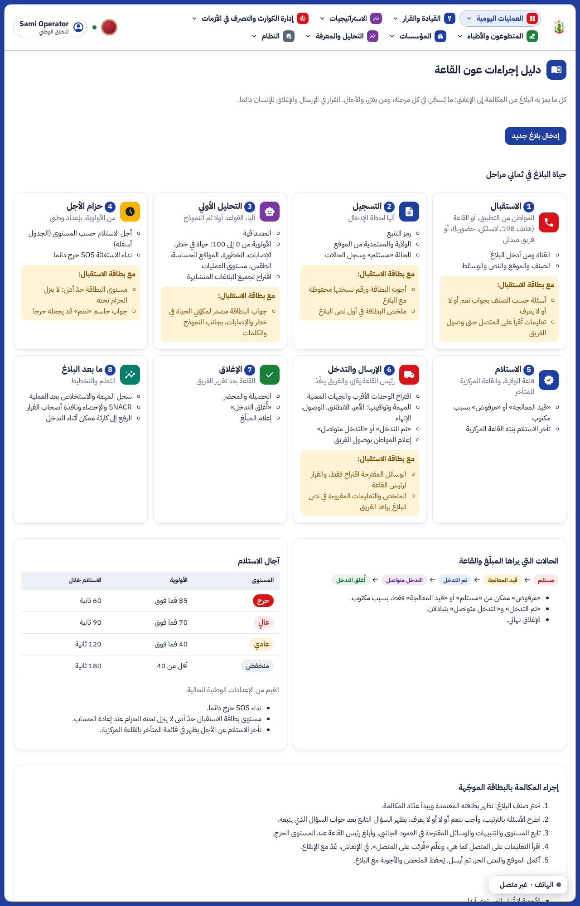
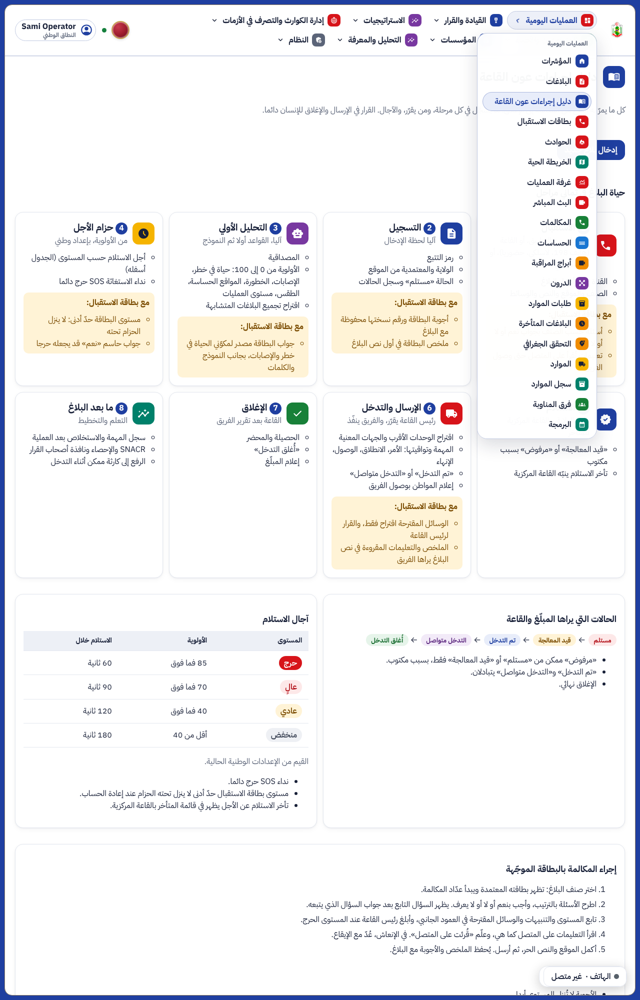

ء-حماية e-Himaya
تقرير المرحلة OS2: بطاقات الاستقبال الموجّهة في القاعة، ودليل إجراءات عون القاعة في القائمة
1. ما أُنجز
- البطاقة في شاشة إدخال البلاغ: عند اختيار الصنف تظهر بطاقته المعتمدة وعدّاد المكالمة. يجيب العون بنعم أو لا أو لا يعرف، فيظهر المستوى والتنبيهات والوسائل المقترحة والتعليمات التي تُقرأ على المتصل (مع إيقاع الإنعاش 110 في الدقيقة). البطاقة اختيارية والنص الحر باقٍ.
- الخادم يعيد الحساب: تُحفظ الأجوبة ورقم النسخة مع البلاغ، ويُضاف ملخص عربي في أول نص البلاغ، ويصبح مستوى البطاقة حدّا أدنى لحزام الأجل، وتغذي البطاقة مكوّني «حياة في خطر» و«الإصابات» في الأولوية دون تغيير الأوزان.
- صفحة «بطاقات الاستقبال»: قائمة البطاقات ونسخها، وكتابة مسودة بسبب، والتصديق الطبي للبطاقات الطبية، والاعتماد من رئيس العمليات، وتجربة البطاقة دون تسجيل. كل كتابة على المستوى الوطني ومسجّلة في السجل.
- صفحة «دليل إجراءات عون القاعة»: حياة البلاغ في ثماني مراحل، وما تضيفه البطاقة في كل مرحلة، والحالات، وآجال الاستلام من الإعدادات الوطنية، وإجراء المكالمة وقواعد البطاقة.
- إصلاح جانبي: قوس ناقص في
global.css (منذ صفحة جدار القاعة) جعل أنماط نافذة SQL وخريطة المنظومة لا تُطبَّق إلا عند تقليل الحركة. أُغلق.
[SIM]البطاقات التسع المزروعة تجريبية: محتواها صيغ من الأدلة العامة وينتظر مراجعة المكتب والطبيب قبل الاستعمال الفعلي (البند OS2-4).
2. لقطات من المنظومة
عون القاعة يستقبل مكالمة لشخص فاقد للوعي لا يتنفس

صفحة بطاقات الاستقبال

دليل إجراءات عون القاعة


3. الصلاحيات
| العمل | من (النطاق الوطني فقط للكتابة) |
|---|
| قراءة البطاقات وتجربتها، والدليل | عون القاعة، رئيس العمليات، محرر المحتوى، المنسق الطبي |
| كتابة مسودة وتعديلها وحذفها | محرر المحتوى، رئيس العمليات |
| التصديق الطبي | المنسق الطبي، أو محرر المحتوى باسم الطبيب في السبب |
| الاعتماد (يسحب النسخة السابقة) | رئيس العمليات |
4. الاختبارات
- الخادم: 1259 اختبارا ناجحا، منها 10 جديدة في
tests/test_call_cards.py. اختبار واحد (test_anomaly::test_reports_out_of_habit) يفشل محليا عند إعادة التشغيل على القاعدة نفسها لأن سجل التدقيق يتراكم بين التشغيلات، ولا علاقة له بهذا العمل؛ في CI القاعدة جديدة.
- اللوحة: 700 اختبار ناجح (11 جديدة)، وفحص الأنواع والتدقيق نظيفان.
- المتصفح:
e2e/phase-os2.spec.ts (3 اختبارات) و phase-n ناجحة.
5. ما بقي (قائمة الانتظار)
- OS2-1: مقارنة مستوى البطاقة بما وجده الفريق لتحسين البطاقات.
- OS2-2: عرض الأجوبة في صفحة البلاغ وتطبيق الفرق.
- OS2-3: إحصاء الاستعمال ومدة المكالمة.
- OS2-4: مراجعة المحتوى التجريبي.
الوثائق الخمس الكبرى (المرجع البصري، مخططات UML، الوصف، كراس الشروط، العرض) تُحدَّث معا في نهاية المرحلة كما في docs/phase-end.md، بعد اكتمال أفكار المشاريع المفتوحة الجارية.